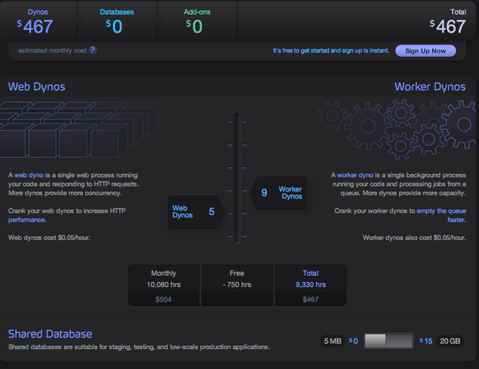

也紀念我們永遠的朋友 李士傑先生（Shih-Chieh Ilya Li）。
Heroku──Ruby 程式語言的最佳雲端環境
您曾經用 Ruby on Rails 開發網站，但在國內找不到可以用的主機空間嗎？或者您是新創公司，但初期還沒有足夠的資金投資伺服器的硬體設備嗎？又或是沒有專職的 MIS 幫您管理伺服器？讓我們來看看 Heroku 吧！
簡介
用 Ruby on Rails 開發網站快又方便，但在台灣比較麻煩的是不容易租到主機空間，如果要自己架一台成本又太高，而且也有一定的技術門檻。目前市面上有不少 PasS (Platform As A Service) 的解決方案，例如 Amazon 的 AWS (Amazon Web Services) 雖然也是個不錯的解決方案，但還是得花一些時間想辦法安裝、設定出可以執行 Rails 的環境。如果您不想這麼麻煩，Heroku 就是個很不錯的解決方案。不只是 Ruby on Rails 的程式，任何 Rack 程式都可以在 Heroku 執行，包括 Ruby on Rails 跟 Sinatra。
費用及效能
選擇主機最在乎的，不外乎是費用及效能這兩件事。Heroku 最受人喜愛的地方之一，就是它提供免費額度：網站空間部份，每個專案的限制是 100 MB，這對一般的小型的專案來說已經足夠了；資料庫的部份，每個專案的資料庫大小限制則是 5MB，而且有 SQLite、MySQL、PostgreSQL 可以選用。
至於效能也不至於太差，對一個普通的網站來說，Heroku 的 1 個 dyno（Heroku 的計價單位）差不多可以處理 10 ~ 50 request/second。如果覺得不夠用，也可以考慮用它的付費方案來增加 dyno 數：
▲ 圖1: Heroku 付費方案
只要拉一下選項，調整 dyno 數，就可以知道每個月要花多少費用了。
申請
請到這裡填寫 Email，不需要額外的費用。
▲ 圖2: Heroku 註冊畫面1
填寫完成不久，就會收到一封啟用的認證信，點擊認證連結回到 Heroku 網站，設定登入密碼：
▲ 圖3: Heroku 註冊畫面 2
這樣就完成申請的程序了。
安裝
有兩個工具是使用 Heroku 會用得上的：Ruby 以及 Git。Ruby 使用 1.8 或 1.9 版本皆可，個人建議使用 1.9.2 的版本，如果您不想在電腦裡裝太多版本的 Ruby，可參考這篇，使用 RVM 來安裝 Ruby。
以下範例因為都是在 RVM 執行的，所以不需要 root 權限，如果您用的是一般系統的 Ruby 的話，可能會需要 sudo 來取得 root 權限才能順利安裝。
裝好 Git 跟 Ruby 之後，Heroku 有打包好的 gem 可以使用：
> gem install heroku
Fetching: rubyzip-0.9.5.gem (100%)
Fetching: heroku-2.15.3.gem (100%)
Successfully installed rubyzip-0.9.5
Successfully installed heroku-2.15.3
2 gems installed
建立專案
裝好 Heroku 之後，我們使用 heroku create 指令建立一個空的專案：
> heroku create
Enter your Heroku credentials.
Email:
This e-mail address is being protected from spambots. You need JavaScript enabled to view it
Password:
Could not find an existing public key.
Would you like to generate one？[Yn] n
Creating deep-spring-4010... done, stack is bamboo-mri-1.9.2
https://deep-spring-4010.heroku.com/ |
This e-mail address is being protected from spambots. You need JavaScript enabled to view it
:deep-spring-4010
Heroku 會在第一次建立專案的時候問您剛才申請的帳號密碼，如果您不想這麼麻煩，在上面的過程中它也會問您要不要建立一組 public key，選擇 Y 它就會引導您建立一組 public key。
在一開始創建專案的時候，Heroku 會自動幫您隨機產生一個名字，以上面的範例來看就是 deep-spring-4010。接著我們打開瀏覽器，連上 https://deep-spring-4010.heroku.com/，應該可以看到這個畫面：
▲ 圖4: Heroku 範例畫面
如果您不喜歡上面這個 deep-spring-4010 的名字，也可以到 Heroku 網站後台去修改，或是直接在一開始建立的時候就指定名稱：
> heroku create hello_kitty
這樣就會幫您用 hello_kitty 這個名稱來建立專案，只要名稱沒有先被申請走，您就可以使用。Heroku 還提供更多其它方便的指令，詳細內容可參考 Heroku 的這篇說明。
上傳您的應用程式
不像一般的網站空間是透過 FTP 上傳檔案，Heroku 是透過 Git 來發佈的。不過在這之前，我們先簡單用 Rails 的 scaffold 快速建立一個小程式，待會我們要把這個小程式上傳到 Heroku 上。
建立 Rails 專案
> rails new my_heroku_demo
.. 訊息略 ..
> cd my_heroku_demo
.. 訊息略 ..
> rails g scaffold Book title:string author:string publish_date:date
> rake db:migrate
== CreateBooks: migrating ===================
-- create_table(:books)
-> 0.0019s
== CreateBooks: migrated (0.0023s) ==========
> rails s
.. 訊息略 ..
打開瀏覽器連上 https://127.0.0.1:3000/books 就能看到剛剛建立的頁面。
▲ 圖5: Heroku──用 scaffold 建立的專案畫面
如果不熟悉 Ruby on Rails，建議參考 Rails 官網上的這篇文章Getting Started with Rails。
部署
網站做好後，就要把東西上傳到 Heroku 上。請在剛剛建立的專案底下輸入指令：
> git init .
Initialized empty Git repository in /tmp/my_heroku_demo/.git/
> git add .
> git commit -m 'first commit'
.. 訊息略 ..
再把遠端的 Heroku 加進來：
> git remote add heroku
This e-mail address is being protected from spambots. You need JavaScript enabled to view it
:deep-spring-4010.git
最後再輸入 git push 指令，就可以把做好的東西「推」上 Heroku：
> git push heroku master
此時您應該會看到一些訊息，並且在 Heroku 上會自動幫您安裝一些需要的 gem。再來，因為我們會用到資料庫，所以要做一下 rake db:migrate，不過跟在本機做的時候稍有不同：
> heroku rake db:migrate
這樣就完成了。之後，請打開瀏覽器輸入網址 https://deep-spring-4010.heroku.com/，或是輸入 heroku open，就會幫您打開預設的瀏覽器。
▲ 圖6: Heroku 部署後的畫面
如果看到 Rails 預設的首頁，就表示應用程式已經傳上去了。再輸入網址 https://deep-spring-4010.heroku.com/books，順利的話就可以看到剛剛寫好的程式。
至此您已經學會如何用 Heroku 部署您的 Rails 應用程式了。在 Rails 3.1 之前的版本用以上的做法應該都很順利，但如果您用的是 Rails 3.1（包括之後的版本），可能不會這麼順利，讓我們繼續看下去。
問題
雖然 Heroku 很方便，但有個比較大的問題是 Heroku 是個「唯讀」的平台，所以如果您想設類似檔案上傳或相簿功能的網站的話，上傳的東西需要另外想辦法傳到別的地方，例如上傳到 Amazon 的 S3。在 Rails 3.1 之後引進了 asset pipeline，靜態檔案會動態產生，而 Heroku 沒辦法讓您這樣做，所以您需要先在本機把 asset 編譯好，之後再推上去：
> rake assets:precompile RAILS_ENV=productioran
.. 訊息略 ..
> git add .
> git commit -m 'add precompied assets'
.. 訊息略 ..
> git push heroku
.. 訊息略 ..
另外，如果您在做 heroku rake db:migrate 這個步驟的時候出現以下錯誤訊息：
> heroku rake db:migrate
rake aborted!
Please install the postgresql adapter: `gem install activerecord-postgresql-adapter` (pg is not part of the bundle. Add it to Gemfile.)
Tasks: TOP => db:migrate => db:load_config
(See full trace by running task with --trace)
請打開您的 Gemfile，加上這一段：
group :production do
gem "pg"
end
加完之後再執行：
> bundle install --without production
應該就可以正常運作了。
Heroku 的後台管理
回到 Heroku 網站，登入之後可以看到目前已建立了哪些 App：
▲ 圖7: Heroku 後台管理 1──App
例如我們剛剛建立的那個 deep-spring-4010：
▲ 圖8: Heroku 後台管理2──App 設定
可以看到關於這個 App 的使用情況。如果不要這個專案了，可以直接從後台刪除。
結論
Heroku 提供了一個可以簡單、快速部署 Ruby 應用程式的平台，不用自己維護主機，隨時可以停掉服務，萬一臨時要加大硬體需求或頻寬，只要線上刷卡就可以輕鬆解決，設定上相當簡單。
不過以費用來看的話，靠加大 dyno 數以應付更大需求的做法其實不便宜。筆者覺得它很適合試一些簡單的小專案，或是一些臨時想到的 idea，先用 Rails 快速實現 idea，再放到 Heroku 的免費額度試一下大家的反應，如果反應良好，再考慮投資更多的預算或硬體。
畢竟開發專案最重要的就是先實現想法，之後若要擴大規模，現在的雲端平台延展性 (Scalability) 都還不錯，通常只要花錢就可以無痛升級。
不久前 Heroku 開始支援 Facebook app，對想要在 Facebook 上建立應用程式的人來說也是一大福音，連 Ruby 的發明者松本行弘也在不久前加入了 Heroku 擔任首席架構師，相信 Heroku 提供的服務會越來越豐富。如果各位有在寫 Ruby 應用程式卻還苦於找不到地方放的話，不妨試試看 Heroku。
OSSF Newsletter : 第 188 期 PaaS：程式語言開發在雲端「Programming in Paas」（下）
Tags: Heroku, Cloud, Ruby, PaaS, platform as a service, 高見龍,
Category: Tech Column
Special


Address：No.128, Sec.2, Academia Rd., Institute of Information Science, Academia Sinica, Nangang District, Taipei City 11529, Taiwan (R.O.C).
Privacy Policy. Terms-of-use